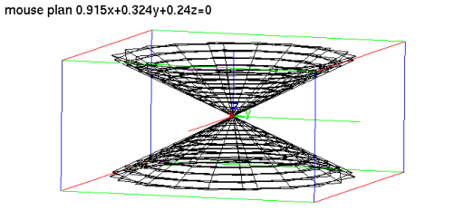
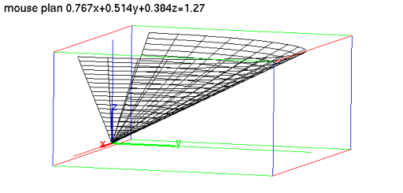
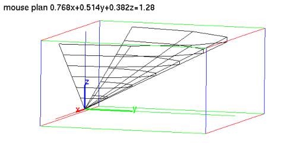

7.14.2 3D parametric surface:
plotparam
paramplot
DrawParm
To draw a parametric surface in ℝ
3
:
plotparam
takes two mandatory arguments and two optional arguments:
exprs
, a list of three expressions involving two parameters.
vars
, a list of the parameters, optionally with a range
var=a..b
.
Optionally,
ustep=
n
, to set the discretization step of the first parameter.
Optionally,
vstep=
m
, to set the discretization step of the second parameter.
plotparam(
exprs,vars
⟨ ,
ustep=
n
,vstep=
m
⟩
)
draws the parametric representation of the surface.
Examples
Input:
plotparam([v*cos(u),v*sin(u),v],[u,v])
Output:

Input:
plotparam([v*cos(u),v*sin(u),v],[u=0..pi,v=0..3])
Output:

Input:
plotparam([v*cos(u),v*sin(u),v],[u=0..pi,v=0..3],ustep=0.5,vstep=0.5)
Output:
